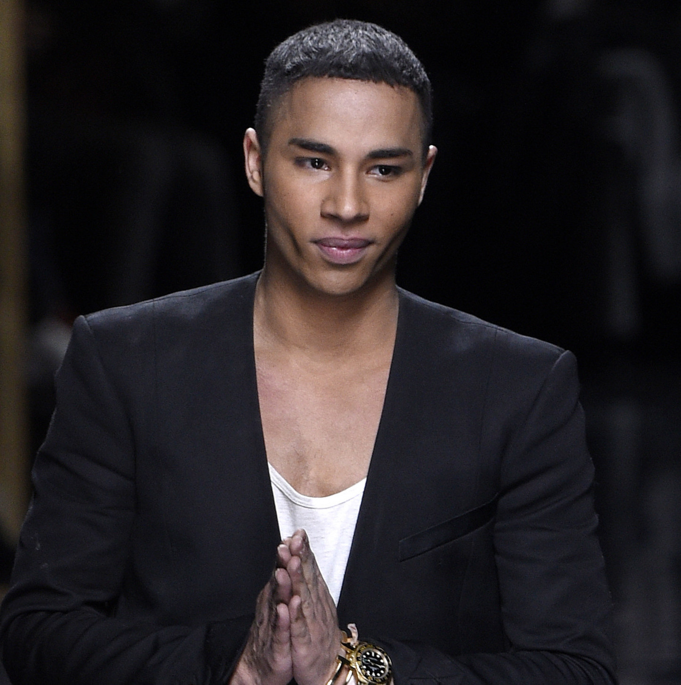

Olivier Rousteing

Styliste
L'arrivée chez Balmain
Olivier Rousteing se passionne très rapidement pour la mode et s’installe à Paris pour étudier à l'ESMOD. Lorsqu'il obtient son dipôme en 2003, il s’envole pour Rome où il devient le styliste de Roberto Cavalli. Il attire alors l’intérêt d’autres marques, dont la maison Balmain. Cette dernière le contacte en 2009 et lui propose le poste de responsable du studio de création. Puis en 2011, Christophe Decarnin quitte la maison Balmain et Olivier Rousteing hérite du poste de directeur artistique à seulement 25 ans.
Un nouveau souffle chez la maison de couture française
Très vite considéré comme un génie de la mode, il enchaîne les succès avec des collections empreintes d'une essence rock et féminine, qui deviendra sa marque de fabrique. Anti-conformiste, il opte pour des pièces qui résonnent comme un hommage à la mode des années 80.
Des collaborations à succès
Entre Rihanna, Beyoncé ou encore Jennifer Lopez, Rousteing a habillé les plus grandes célébrités. Cette année, ce dernier a été invité à créer la collection Haute Couture de Jean Paul Gaultier printemps-été 2022.